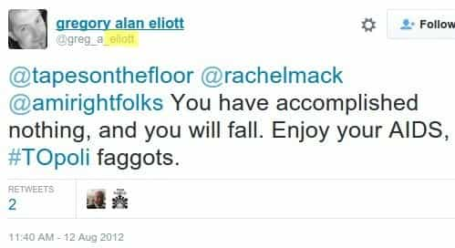

< < < Back
Canadian Feminists Failed To Have Man Imprisoned For Sending Them Mean Tweets – Return Of Kings
With Guthrie, for instance, what frightened her about Elliott was the sheer volume of his tweets about her…
— The National Post reporting on the preposterous offense Steph Guthrie took to Gregory Alan Elliott tweeting about her. If this is the standard for criminal harassment online, 1,000,000 Americans should be jailed for tweeting their gripes about Barack Obama.
A Canadian court has found Gregory Alan Elliott, prosecuted for criminal harassment after disagreeing with feminists on Twitter, innocent. SJWs Steph Guthrie and Heather Reilly received a number of oblique slap-downs from the judge, who ruled that their fears over their “safety” were entirely unreasonable. The decision is a victory for common sense and highlights how—absent threats—communicating with people via tweets and hashtags should not be a criminal offense.
Elliott tragically lost his job as a graphic artist after his very, very widely publicized arrest. Then came the additional and extremely heavy burden of fighting to clear his name, which compounded the immense impact of this whole debacle on his wife and children. The accusers, Guthrie, Reilly and a third woman whose claims against Elliott were dropped from the charges, could rely on the state to prosecute him without having to pay a dime for it.
The background

Heather Reilly and Steph Guthrie, the world’s most delicate flowers.
Gregory Alan Elliott had been communicating with Steph Guthrie before a bitter online falling out. Elliott criticized Guthrie after she tried to set the internet upon Brendalin Spurr, a very ironic hypocrisy given what she later alleged against Elliott. Spurr had created an Anita Sarkeesian punching game of the exact same kind he had devised for Jack Thompson, a disbarred attorney infamous for wanting to censor games of almost all their sexual and violent content.
Perpetuating a feminist obsession with making everything about invented misogyny against women, despite the earlier game about Thompson, Guthrie initiated a harassment campaign targeting Spurr, contacting scores of people, including his potential employers and many local media outlets. Guthrie eventually blocked Gregory Alan Elliott after he called her obsessive actions into question. Elliott then continued tweeting at Guthrie, who demanded he stop using the public platform to mention her. The police and courts then became involved.
Police found no threats of harm by Elliott against either Guthrie or Reilly, who had joined the fracas earlier. This assessment was reiterated by the court, which found no tweets or other communications of a violent or sexual quality. In the meantime, the innocent man had been subjected to long-term Twitter and general internet bans. This further eroded his ability to generate an income, as most of his work opportunities stemmed from online interactions.
Steph Guthrie and Heather Reilly are so disingenuous they make fabulists look truthful
Gregory Alan Elliott was denied a meaningful income for years after being banned from the internet, without even being convicted of a trumped-up crime, much less a real one.
In mid-2015, National Post columnist Christie Blatchford reported some of the big holes in Guthrie and Reilly’s story. For a start, the pair were so “terrified” about Gregory Alan Elliott that they organized a meeting with associates to brainstorm ideas about how to publicly shame their new enemy. This sort of concerted effort to continue a feud is hardly the stuff of being scared for your personal safety.
Worst of all, and the thing that constitutes the biggest, non-prosecuted criminal harassment of this case, Reilly disseminated Twitter accusations by an account supposedly belonging to a 13-year-old girl that Gregory Alan Elliott was a pedophile. The mendacity of even retweeting such an accusation is beyond vile and demonstrates what sort of repulsive and narcissistic worms both Guthrie and Reilly are (remember Guthrie’s hunting down of Spurr).
Surprisingly, Toronto’s The Star, no friend of ROK after its slandering of Roosh last year, felt the need to report on the baseless pedophile accusations against Elliott.
A respect for this wider context cannot be said of Vice‘s Sarah Ratchford, who cried at length in an article about how women are apparently an endangered species online after the court decision. A friend of Guthrie’s, she deliberately left out the deplorable false pedophilia accusations by Reilly, which would have greatly changed unbiased readers’ view of the case and the prima donna complainants.
There was no mentioning by Ratchford of Brendalin Spurr either, particularly Guthrie’s harassment in calling prospective employers and gerrymandering out of the incident the existence of the Jack Thompson game, which obliterated any pretext for calling Spurr a misogynist encouraging violence against women. Never let facts and the background get in the way of a story!
The judge made a serious mistake and falsely impugned Gregory Alan Elliott’s character

“Hold on, David! He was found not guilty!” you may say. And, yes, this is good. But what is shambolic, and reflects the judiciary’s willingness to believe poor evidence, is that Gregory Alan Elliott was wrongly described as “homophobic,” based on a very incorrectly attributed tweet. No less than four times did the judge describe the man this way.
For us here at ROK, even if the comment were his, it would not be a big deal. The focus on what Gregory Alan Elliott was thought to have said about gays was so selective as to be morally meaningless. People say these sorts of things all the time, whether to attack people with different political views, people they simply do not like, all white men, Green Bay Packers supporters, or Jeremy Clarkson fans. Until such time as all insults against anyone are treated equally, and do not depend on any severe disdain SJWs have for you, picking out random ones is a joke.
The very astute Greg Renouf, who was in court on that day, unearthed that this was, in fact, a tweet from a fake account, which (I think) was probably created by some of the very same feminists, not necessarily Guthrie and Reilly, who wanted Elliott prosecuted. Remember, this a man who has already has his finances blown to pieces by vindictive accusations and draconian limits on his ability to derive an income, plus legal fees and the substantial attention he needed to devote to saving himself from jail. These allegations of homophobia will dent his employment prospects above and beyond their present curtailment.
This triumph should be treated cautiously
Thankfully she only gave a talk at a TEDx event, not an official TED one, but Steph Guthrie has been presented with the ability to “earn” money by falsely presenting herself as a victim.
R v Elliott was the first case of its kind and will set something of a precedent. By its very nature, though, ideas of “reasonable fears” after harassment claims are open to substantial tinkering, especially in a climate indulgent of SJWs. Notions of reasonability also reflect the society in which we live. With more and more chances for people to be narcissistic, destroy the livelihoods of social narrative critics like Gregory Alan Elliott, and promulgate demands for anti-free speech measures, mental illness-based feminist victimology is likely to become more prevalent and, sadly, “reasonable”.
Plus, the shrill screams of a Steph Guthrie or Heather Reilly crowd out the voices of the majority of people, who are too busy working, raising families, and making other productive contributions to society. These SJWs attempt to claim the mantle of spokeswomen for some wider virus of misogynistic harassment, one which is instead always either rampantly exaggerated or non-existent. If challenged vociferously, their poison can be mitigated. If not, fantasists like them will have future success in sending individuals similar to Gregory Alan Elliott straight to jail.
Be aware of these risks. Yet for now, let’s bask in the sweet rays of Guthrie and Reilly’s courtroom melting. The heat of the truth has that effect on precious snowflakes.
Read More: The Canadian Establishment Is Working With Feminists To Shut Down Roosh’s Speeches